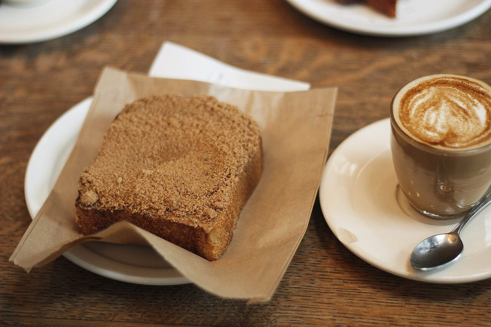

Instagramをのぞいてみたいです。投稿が増えたら、ぜひ見てみたいです。
口コミ
想像した声
以下は制作側の創作で、実在のお客様の投稿ではありません。
喫茶店と聞くと、足を運んでみたい気持ちが湧いてきます。
メニューが公開されたら、のぞいてみたいです。
3件とも、制作側が書いた創作文です。実在のお客様の声ではありません。
ギャラリー(イメージ)
黒い背景のパン


写真はパンのイメージです。お店のものではありません。
ギャラリー(イメージ)
焼き菓子とコーヒー



写真は焼き菓子とコーヒーのイメージです。お店のものではありません。